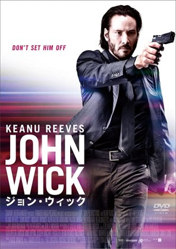
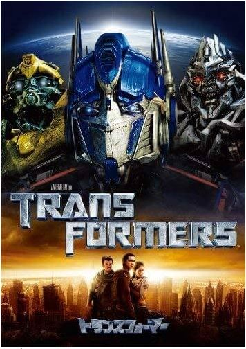
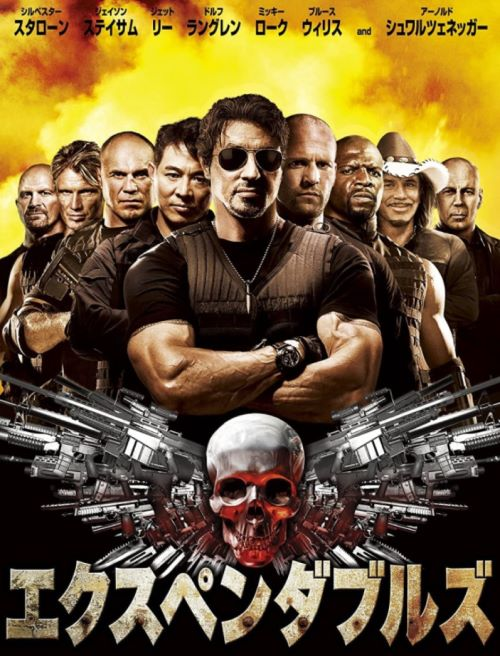

個人的オススメ映画！～アクション編～
このページは個人的にオススメの映画を紹介するページです
その１．JHON WICK（ジョン・ウィック）シリーズ

ジョン・ウィック』（原題: John Wick）は、2014年に公開されたアメリカ映画。引退した凄腕の殺し屋の復讐劇を描くアクション映画。キアヌ・リーブス主演兼・製作総指揮。
『マトリックスなど数々の映画でスタントやスタントコーディネーターを手がけたチャド・スタエルスキの初監督作品。日本のアニメ、マーシャル・アーツ、殺陣、香港映画のガンフー、マカロニ・ウェスタン から影響を受けたアクションが特徴。
その2．Transformers（トランスフォーマー）シリーズ

『トランスフォーマー』（Transformers）は、2007年公開のアメリカ映画。マイケル・ベイ監督、スティーヴン・スピルバーグ制作総指揮、ドリームワークス制作、パラマウント映画配給。
1980年代から展開されてきた“変型するロボット”をテーマとする玩具・アニメーション・コミックシリーズ『トランスフォーマー』の実写映画版。
見どころはアクションだけでなく細部までこだわったCG、VFXによる変形シーン

シルベスター・スタローン、ジェット・リー、ジェイソン・ステイサムら新旧のアクションスターが集結した戦争アクション大作。共演にミッキー・ローク、ドルフ・ラングレンほか。ブルース・ウィリス、アーノルド・シュワルツェネッガーもカメオ出演。監督・脚本はスタローン。
ど派手なアクションや銃撃戦、爆破のオンパレードなどが見どころ。